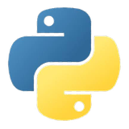
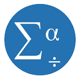
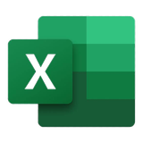

Kenya Registered Voters and Polling Stations, 2017 and 2022
Elections
Data Analysis
Statistics
Analysing voter registration and polling-station data from two Kenyan general elections.
STATISTICS · DATA ANALYTICS · RESEARCH & M&EOpen to opportunities
I am a statistician and data analyst who turns raw data into clear, defensible evidence for banks, NGOs, research organisations and businesses: questionnaire design, digital data collection, statistical analysis, qualitative research, dashboards and M&E reporting.
Explore Projects View CV Contact me
Open to full-time roles, contracts and consulting · Data Analyst · Research Analyst · M&E Analyst · BI & Reporting Analyst
Data cleaning, SQL, Python and R analysis, and dashboards that answer real questions.
Study and questionnaire design, SPSS and Stata analysis, and results explained in plain language.
Tableau and Power BI reporting that decision-makers actually use.
Indicators, digital data collection and data quality checks for donors and boards.
Accurate numbers, clear reporting and analysis that can be audited.
Donor-ready evidence you can trust.
Rigorous analysis that others can reproduce.
Insight that moves decisions.
I work in both quantitative tools (SPSS, Stata, R, Python) and qualitative tools (NVivo, ATLAS.ti), so your evidence has both the scale and the story.
I design the questionnaire, collect the data digitally, analyse it and report it, so quality is protected at every step.
You get findings that a programme manager, donor or board member can understand and use, not just tables of output. Limits are stated plainly.

Python
SPSS
ExcelPick a sector to see the methods I would apply and the questions they help answer.
Questions I can help answer
Questions I can help answer
Questions I can help answer
Questions I can help answer
Hiring for an analyst or research role, or need help with a data project? Send a message or reach me directly.